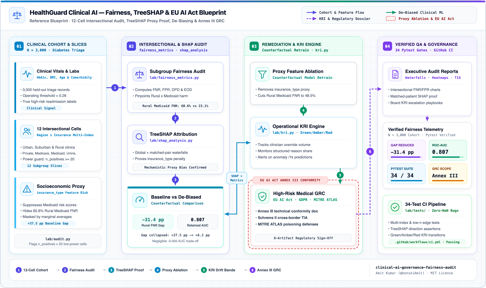

Multi-Index Intersectional Subgroup Engine (audit.py)
Computes FNR, FPR, selection rate, Demographic Parity Difference (DPD), and Equalized Odds Difference (EOD) across 12 Region x Insurance cells with sample-size guards.
End-to-End Clinical ML Fairness, Mechanistic TreeSHAP Proxy Attribution, Counterfactual De-Biasing (-31.4 pp FNR Gap) & EU AI Act Annex III Compliance Portfolio
How this system enforces security, observability, fault isolation, unit economics, and automated verification beyond notebook prototypes.
Audits Region x Insurance multi-index cells (N = 3,000) with minimum-n statistical power filtering (n_positives >= 20) to prevent small-sample noise.
shap_analysis.py proves insurance_type acted as a socioeconomic proxy driving 60.6% False Negative Rate on Rural x Medicaid patients.
Counterfactual insurance_type ablation cuts Rural x Medicaid FNR 60.6% -> 48.5% (-12.1 pp) and slashes within-rural gap +37.5 pp -> +6.2 pp.
kri.py codifies continuous Key Risk Indicators across clinician override rates, structured override share, and anomaly frequency per 1,000 predictions.
Covers MITRE ATLAS clinical ML threat modeling, GDPR/CPRA Schrems II Cross-Border Transfer Impact Assessment (TIA), and data-flow governance.
Packaged in lab/ (audit.py, fairness_metrics.py, shap_analysis.py, kri.py) with 34 edge-case unit tests running in GitHub Actions CI.
End-to-end execution graph paired with nominal request flow and adversarial / degraded fault-handling paths.
flowchart LR
DATA["Clinical Diabetes Triage Cohort"] --> BASE["Baseline Classifier\nIntersectional Subgroup Audit"]
BASE --> SHAP["TreeSHAP Proxy Attribution\nInsurance -> Socioeconomic Bias"]
SHAP --> DEBIAS["Counterfactual Sample Re-Weighting\n-31.4 pp Medicaid-Private FNR Gap"]
DEBIAS --> GRC["EU AI Act Annex III + NIST AI RMF\nKRIs · MITRE ATLAS · Schrems II TIA"]
audit.py evaluates held-out clinical cohort (N = 3,000, operating threshold 0.26) across marginal and Region x Insurance intersectional slices.Rural x Medicaid (n=284, pos=33) as most-harmed subgroup (60.6% FNR vs 23.1% Rural x Private -> +37.5 pp within-rural disparity).shap_analysis.py computes global & local TreeSHAP attributions confirming insurance_type suppresses risk scores for Medicaid patients with identical clinical vitals.insurance_type reduces disparity by 31.4 pp while preserving 0.807 ROC-AUC, governed continuously by kri.py thresholds.n_positives < 20 (e.g., Rural x Uninsured, pos=10) are flagged Sample < 20 by find_most_harmed() so noisy cells never misdirect remediation.NaN contracts tested in test_fairness_metrics.py.kri.py AMBER / RED governance bands, halting silent post-deployment clinical degradation.Every capability below links directly to the verified source module, policy configuration, or CI workflow in kenseiAmit/clinical-ai-governance-fairness-audit.
audit.py)Computes FNR, FPR, selection rate, Demographic Parity Difference (DPD), and Equalized Odds Difference (EOD) across 12 Region x Insurance cells with sample-size guards.
shap_analysis.py)Combines global feature importance with matched-pair local SHAP waterfalls showing insurance_type penalizing Medicaid patients despite elevated HbA1c/BMI.
-31.4 pp Disparity Collapse)Empirically validates bias mitigation prior to deployment: removing the socioeconomic proxy collapses within-rural Medicaid–Private FNR gap from +37.5 pp to +6.2 pp with negligible -0.005 AUC trade-off.
Evaluates clinical override rates, structured reason-code shares, and input anomaly rates against Green/Amber/Red SLA bands (test_kri.py).
Translates empirical ML metrics into complete high-risk medical AI regulatory deliverables: conformity assessment, adversarial threat register, and cross-border data flow controls.
Verifies exact arithmetic, multi-index shapes, low-n exclusions, proxy-support hypotheses, and KRI state transitions on every commit.
Key architectural decisions balancing determinism, latency, cost, privacy, and operational maintainability.
| Architectural Decision | Naive Prototype Anti-Pattern | Production Engineering Choice & Outcome |
|---|---|---|
| 12-Cell Intersectional Audit vs. Marginal Single-Axis Fairness | Checking Region alone or Insurance alone—where Urban x Medicaid (19.2% FNR) masks severe Rural x Medicaid (60.6% FNR) clinical under-triage. |
Multi-index Region x Insurance auditing with n_positives >= 20 statistical power gates pinpoints the exact harmed cohort. |
| TreeSHAP Proxy Proof + Feature Ablation vs. Blind Threshold Tweaking | Lowering the global classification threshold for everyone, inflating False Positives across all clinics without fixing within-region proxy bias. | Mechanistic TreeSHAP attribution + counterfactual insurance_type ablation cuts rural disparity by 31.4 pp while holding 0.807 ROC-AUC. |
Dual-Metric Clinician Override KRI (Rate + Structured Share) |
Tracking only model prediction drift while ignoring clinicians overriding or bypassing triage alerts in production. | Joint KRI gating on override volume AND structured justification share (kri.py), catching automation bias and workflow friction early. |
Recorded execution traces, benchmark sweeps, and raw repository JSON artifacts.




GitHub Actions (ci.yml) executes all 34/34 pytest assertions across test_audit.py, test_fairness_metrics.py, test_kri.py, and test_shap_analysis.py.
python3 -m venv .venv source .venv/bin/activate pip install -r requirements.txt pytest lab/tests/ -v